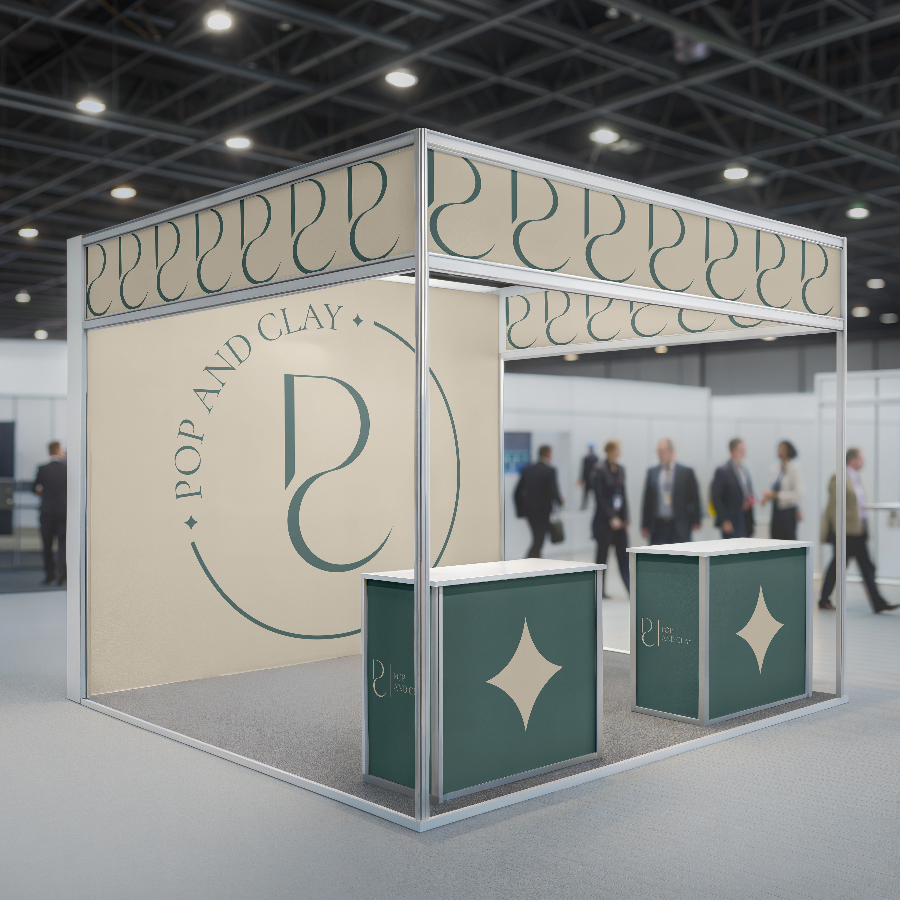

Case Study
Pop and Clay — Werkplekleren 2
01. Beschrijving van de case
Het project "Pop and Clay" (Sprint 1) was gericht op het leggen van een stevig fundament voor de visuele identiteit van het merk. De hoofddoelstelling omvatte een diepgaand marktonderzoek door middel van benchmarking en de ontwikkeling van gedetailleerde persona's die de doelgroep nauwkeurig weerspiegelen. Dit project vereiste een analytisch inzicht in hoe visuele taal communiceert met de gebruiker. Het was essentieel om abstracte marketinggegevens te vertalen naar concrete ontwerpoplossingen, wat de basis vormde voor het daaropvolgende prototypen. De focus lag op het creëren van een esthetiek die aansluit bij de huidige trends, met behoud van het unieke karakter van het merk.
02. Mijn aandeel hierin
Binnen deze sprint was ik verantwoordelijk voor het vertalen van conceptuele ideeën naar visuele assets met behulp van Figma en Adobe CC. Ik heb een reeks wireframes en interactieve prototypen ontwikkeld, waarmee de structuur van de gebruikerservaring werd vastgelegd. Samen met mijn projectpartner hebben we brainstormsessies gehouden waarin mijn rol bestond uit het genereren van visuele concepten. Ik heb de stilistische richting vormgegeven, gebaseerd op een minimalistische en 'editorial' esthetiek, gebruikmakend van een neutraal palet van beige, bruine en gedempte blauwe tinten. Ik heb speciale aandacht besteed aan het creëren van mock-ups: het ontwikkelen van realistische visualisaties die perfect aansluiten bij de specifieke behoeften van het merk "Pop and Clay", om te demonstreren hoe het ontwerp in een echte omgeving zou functioneren.
03. Wat je eruit geleerd hebt
Ik heb geleerd om mijn ontwerpoplossingen effectief aan te passen aan projectvereisten en constructief te werken met feedback. Een belangrijke nieuwe vaardigheid is het creëren van hoogwaardige mock-ups die de sfeer en behoeften van het merk nauwkeurig overbrengen. Daarnaast heb ik ervaren hoe je abstracte data uit benchmarking direct vertaalt naar doordachte UX/UI beslissingen in Figma. Het iteratieve proces leerde me om niet rigide vast te houden aan een eerste concept en mijn stilistische keuzes beter te onderbouwen. Tot slot heb ik mijn workflow tussen Adobe CC en Figma geoptimaliseerd, waardoor ik efficiënter schakel tussen wireframes en het gepolijste prototype.



Brandbook van Pop and Clay
Klik hieronder om het volledige PDF-verslag te bekijken (Team 14 WPL2).
📄 Open PDF verslagVolledige Eindreflectie
Klik hieronder om het volledige PDF-verslag te bekijken (DVO Profiel, POP & X-Factor).
📄 Open PDF verslag